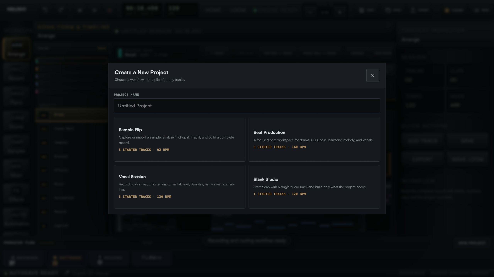

Flagship surface
Launch Studio becomes the destination, not just another tile.
Built for arrangement, recording, mixing, export, and the feeling that the whole system finally resolves into a finished record.